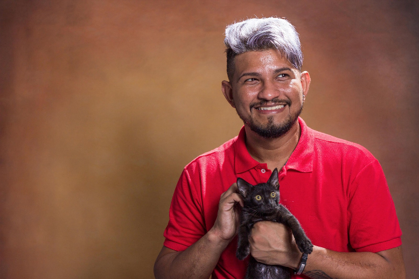

-

Bem-vindo ao Peludinhos da UFPA
-

Bem-vindo ao Peludinhos da UFPA
-
info_outlineQuem somos
O projeto peludinhos da UFPA foi desenvolvido para atender a necessidades dos animais que estão na universidade e precisam de assistência, além de carinho e afeto. O projeto surgiu como defesa de animais doentes e necessitados no campus, se trata de um incentivo ao bem estar e ao respeito a vida. Os peludinhos contam com apoio externo, tais como voluntários e amigos (que participam das atividades do projeto), assim também como parceiras que buscamos com interessados em dar suporte aos animais. Basicamente os peludinhos da UFPA sobrevivem de doações e multirões, contamos com a participação de pessoas que voluntariamente assim como nós, entende a necessidade do bem estar dos 150 cães e gatos (ainda não contabilizados). Além de precisar de ração para alimentação diária, são necessários itens indispensáveis como: vacinas, shampoos veterinários, sabonetes que previnem infecções e remédios (os animais que se encontram no abrigo precisam de cuidado especial pois são sequelados de cinomose, deficientes, idosos e afins). Tudo isso para manter não só a saúde, mas a higiene dos peludinhos que assim ficam menos propensos a doenças. E claro, além da assistência necessária, um dos objetivos centrais do projeto visa o incentivo de doações dos animais e apadrinhamento, para que eles tenham direito ao amor, carinho e cuidado de uma família, para que possa melhorar o bem estar do peludinho e sua condição de vida.